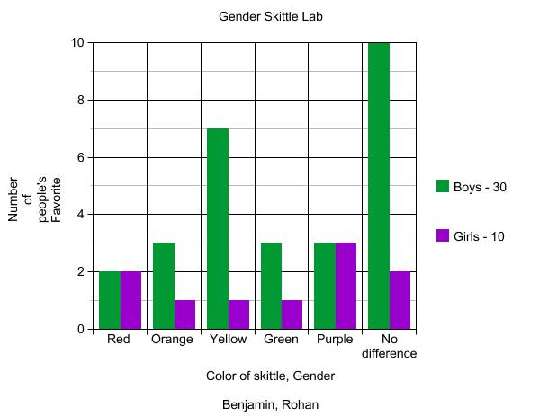

We gave out a survey to 65 people asking what there favorite color of skittle is and we also recordeed thier gender
We found that girls are as likley to say that they like a color of skittle as they are not to care, but boys have a hige percentage that dont care. For all of the skittle boys and girls like them about the same, while only seeing girls like purple and red more than boys do.
Boys are more willing to take the test than girls. Girls take longer on the test than boys. Girls Don't Give fake / troll responses while some boys do.
4/10/2017 13:46:51 Marius Schueller Male TRUE 4/10/2017 13:47:45 nick husted Male False (If so answer the following 5 questions) 4 1 3 5 2 4/10/2017 13:48:08 Rohan Parnerkar Male TRUE 4/10/2017 13:48:44 Benjamin Lindeen Male False (If so answer the following 5 questions) 3 4 2 5 1 4/10/2017 13:49:29 Dylan Dipasupil Male False (If so answer the following 5 questions) 5 4 3 1 2 4/10/2017 14:09:35 Justin Lee Male False (If so answer the following 5 questions) 4 2 1 5 3 4/10/2017 14:17:44 Owen Murphy Male False (If so answer the following 5 questions) 3 5 2 1 4 4/10/2017 14:32:17 Male False (If so answer the following 5 questions) 3 5 1 4 2 4/10/2017 14:42:16 Lisa Reed Female False (If so answer the following 5 questions) 1 3 5 4 2 4/10/2017 15:00:37 Daniel Yangxi Male TRUE 4/10/2017 15:15:45 Abby Gabler Female False (If so answer the following 5 questions) 1 3 5 4 2 4/11/2017 9:14:19 Addy Stroh Female False (If so answer the following 5 questions) 3 2 3 5 1 4/11/2017 9:18:56 Owen Monge Male False (If so answer the following 5 questions) 3 3 2 1 2 4/11/2017 9:20:34 Sean Studenski Male False (If so answer the following 5 questions) 2 4 3 5 1 4/11/2017 10:09:55 Katherine Chang Female False (If so answer the following 5 questions) 2 4 3 5 1 4/11/2017 10:17:03 Benjamin Yang Male False (If so answer the following 5 questions) 4 1 2 5 3 4/11/2017 10:18:00 Shelby stobbe Female False (If so answer the following 5 questions) 5 3 2 2 1 4/11/2017 11:46:23 Alex Gonikman Male False (If so answer the following 5 questions) 4 3 5 1 2 4/11/2017 12:31:06 Liam Male TRUE 4/11/2017 13:33:54 Kevin Thomas Male TRUE 4/11/2017 13:34:09 David Everett Male TRUE 4/11/2017 13:36:27 max kedrowski Male False (If so answer the following 5 questions) 2 1 3 4 5 4/11/2017 13:37:12 Mark Ray Male TRUE 4/11/2017 13:37:38 Daniel mbonde Male False (If so answer the following 5 questions) 5 1 3 2 4 4/11/2017 13:44:08 Dvonte Male False (If so answer the following 5 questions) 3 2 5 1 4 4/11/2017 13:47:52 Male False (If so answer the following 5 questions) 1 2 3 4 5 4/11/2017 13:48:32 Female False (If so answer the following 5 questions) 4 3 2 1 5 4/11/2017 13:49:30 Female TRUE 4/11/2017 13:50:02 Joey Axelson Male False (If so answer the following 5 questions) 1 3 4 5 2 4/11/2017 14:46:46 Conor Abrahamson Male TRUE 4/11/2017 15:08:35 Liam Male TRUE 4/11/2017 16:04:45 Jason Elyea-Wheeler Male False (If so answer the following 5 questions) 3 5 1 2 1 4/11/2017 16:22:02 Nick Westberg Male False (If so answer the following 5 questions) 2 5 4 1 3 4/11/2017 17:51:49 You-Gyung Won Female False (If so answer the following 5 questions) 2 1 3 4 5 4/11/2017 19:24:07 Eva Pattee Female False (If so answer the following 5 questions) 2 5 1 4 3 4/11/2017 21:07:16 Benjamin Trinh Male False (If so answer the following 5 questions) 3 4 2 2 3 4/12/2017 0:23:54 Juliana Female False (If so answer the following 5 questions) 1 3 2 4 5 4/12/2017 0:56:10 Emerson WIlliams Female 4/12/2017 11:43:53 Male False (If so answer the following 5 questions) 5 3 2 1 2 4/12/2017 13:05:09 William Cooke Male TRUE 4/12/2017 13:38:28 alice Cherniak Female No (if so answer the following 5 questions) 3 5 2 4 1 4/12/2017 14:15:04 Lam Huynh Male No (if so answer the following 5 questions) 1 4 2 5 3 4/12/2017 16:00:25 David Estrada Male TRUE 4/12/2017 16:07:02 Winston Lu Male No (if so answer the following 5 questions) 4 1 3 2 5 4/12/2017 16:12:53 You-Gyung Won Female No (if so answer the following 5 questions) 2 1 3 4 5 4/12/2017 17:43:52 Corey Lundgren Male TRUE 4/12/2017 17:43:58 Female TRUE 4/12/2017 17:56:22 Vera Shiply Female False (If so answer the following 5 questions) 1 3 4 2 5 4/12/2017 18:21:34 Sanjana Female False (If so answer the following 5 questions) 2 4 5 3 1 4/12/2017 18:34:22 Leah Spranger Female False (If so answer the following 5 questions) 4 5 2 1 3 4/12/2017 19:45:58 Heba Female False (If so answer the following 5 questions) 1 5 2 3 4 4/12/2017 22:17:47 Grant Thomas Male No (if so answer the following 5 questions) 4 3 2 1 5 4/12/2017 22:21:24 Sam Roehl Male No (if so answer the following 5 questions) 2 2 3 3 2 4/12/2017 22:24:45 Luke Endres Male TRUE 4/12/2017 22:28:34 Ian Stine Male TRUE 4/12/2017 22:36:34 RJ Cailier Male No (if so answer the following 5 questions) 4 3 1 5 2 4/12/2017 22:47:37 Lucas Paris Male No (if so answer the following 5 questions) 3 2 5 1 4 4/12/2017 22:56:23 Curtis Fitzpatrick Male TRUE 4/12/2017 23:24:54 Matthew Carlson Male TRUE 4/12/2017 23:30:42 Olivia Wyatt Female False (If so answer the following 5 questions) 3 4 1 2 5 4/12/2017 23:30:47 Ben Binder Male No (if so answer the following 5 questions) 2 3 4 1 5 4/12/2017 23:45:43 Ivy Wyatt Female False (If so answer the following 5 questions) 3 1 2 4 5 4/12/2017 23:54:23 Katie Female False (If so answer the following 5 questions) 5 4 2 1 3 4/13/2017 0:54:21 Savanna R Female TRUE 4/14/2017 0:43:54 Tess Helgeson Female False (If so answer the following 5 questions) 3 2 1 4 5